Programming ENIAC is unlike any other computer you have ever programmed. It does not understand
any form of machine language, nor any other language for that matter. ENIAC is more akin to a cpu
that consists of multiple computational units which are not yet connected together. It is up to
the programmer to configure each of these individual units and then tie them together to perform
the desired task.
In addition to the various computational units of ENIAC there are numerous "trays" that are used
to carry digit and program pulses from one unit to another. These trays are anologous to what we
now call busses. There are two different types of trays, digit and program trays. Digit trays are
used to carry digit information from one ENIAC unit to another. Program trays are used to carry
program pulses from one unit to another. Each tray, whether digit or program, contains 11 wires
to carry information. Digit trays consist of sockets spaced along the tray that allows the tray
to be connected to digit ports of the computational units. Whereas program trays contain sockets
for connecting program signals to units.
Trays on the original ENIAC each tray spanned across four panels and then connectors at the ends
allowed trays to be connected so that signals can be carried across all of ENIAC's panels. This
simulator handles the trays a bit differently and so no connections are needed to connect trays
together when a signal needs to be sent between panels that are far apart. Digit trays have
8 sections of 5 trays each and program trays have 9 sections of 9 trays each. There are more
than enough connection points for even the most complex of setups.
When connecting to a tray it is important to understand how the numbering on the trays works.
An example digit tray assignement would be D1-A. The 'D' specifies that this is a digit tray.
The '1' specifies the tray is in section 1 and the 'A' specifies tray 'A'. Another digit tray
example would be D5-E, which specifies this is a digit tray in section 5 and tray E.
Program trays use a similar format. An example is P2-B:1. The 'P' specifies that this is a
program tray, the '2' specifies this is in section 2, the 'B' specifies tray B, and the ':1'
specifies that the first connection is being used. A program tray has connections from :1 to
:11.
In this setup we will do the following tasks:
|
First be sure you have the Init tab slected on the simulator |
|
Connect the Init Pulse to P1-A:1 |
What we have done here is to connect the Go button to a program tray. All setups proceed
by sending program pulses from one unit to another to initiate the next step of the setup. The
connection we have made above allows us to get the ball rolling. When the Go button is
pressed the first program pulse will be sent on P1-A:1
Now we need to configure a unit to act upon this pulse. We will start by configuring the constant
Transmitter to send a value with this pulse.
 |
Select the Constant Transmitter Const 1 |
 |
Turn On the power to the Constant Transmitter |
 |
Connect the input of program 9 to tray P1-A:1 |
 |
Configure program 9 by setting its mode switch to LR and the register switch to J |
 |
In order to send, the Constrant Transmitter must be connected to a digit tray. Connect it to D1-A |
 |
Select the Const 2 tab |
Then set Register J to hold the value of 123
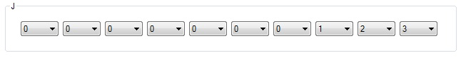
At this point the Constant Transmitter is all setup to send the value of 123 when the Go button
is pressed. Now we need to receive this number in an accumulator.
 |
Select the Acc tab |
 |
And be sure that accumulator 1 is selectged |
|
Turn On the power to this accumulator |
 |
Connect the pulse input of program 1 to P1-A:1 |
 |
Now configure program 1 by setting its mode switch to alpha and its Clear/Correct switch to 0 |
 |
Now we need to connect the alpha input channel to the same digit tray that the Constant Transmitter is sending on, D1-A |
At this point the first task of our setup is complete. We can go ahead and run this portion to be
sure that no mistakes have been made up til this point.
|
Switch to the Init tab |
| Press the Clear button | |
 |
Followed by the Go button |
|
Switch back to the Acc tab |
The accumulator display should now be showing the 123 that the Constant Transmitter sent
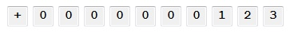
If you got the correct result then you are ready to continue this tutorial, If you did not get this
answer then review what has been done up til this point.
The second task of our setup is to load a value into accumulator 2. We will being this task on the
Constant Transmitter.
|
Start by selecting the Const 1 tab |
| 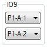 | We first need to generate a pulse when program 9 of the Constant Transmitter finishes. Set the output portion of IO9 to P1-A:2 |
| 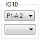 | Since we need to send another constant, we will trigger program 10 of the Constant transmitter. Set the input of IO10 to P1-A:2 |
| 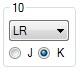 | Now configure program 10 to send the whole contents of register K |
|
The next step is to set a value into register K. Select the Const 2 tab |
Set the value in register K to 456
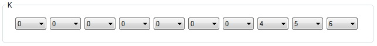
At this point when the pulse P1-A:2 occurs, program 10 of the Constant Transmitter will execute,
sending the value of 456 from register K. Now we need to configure accumulator 2 to receive it.
|
Select the Acc tab |
 |
Select accumulator 2 |
|
Turn On the power to this accumulator |
 |
Set the input signal of program 1 to P1-A:2 |
|
Now configure program 1 by setting its mode switch to alpha and its Clear/Correct switch to 0 |
|
Now we need to connect the alpha input channel to the same digit tray that the Constant Transmitter is sending on, D1-A |
Now task 2 of our setup is complete. Lets go ahead and test it.
|
Switch to the Init tab |
| Press the Clear button | |
|
Followed by the Go button |
|
Switch back to the Acc tab |
The accumulator display should now be showing the 456 that the Constant Transmitter sent
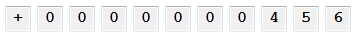
Also check accumulator 1 and make sure it still shows 123.
If you do not have 123 in accumulator 1 and 456 in accumulator 2 then recheck your setup
and make sure that you have made all the connections above. If you have the correct values
in both accumulators then you are ready to proceed to the third task.
Now on to the third task. In this task we are going to add 5 times the value stored in
accumulator 2 to accumulator 1.
|
Start by selecting the Const 1 tab |
| 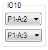 | We need to trigger the next step of our setup. We will use the output side of program 10 on the Constant Transmitter to trigger the next step of our setup. Set the output pulse to P1-A:3 |
Now we will configure accumulator 2 to send its contents 5 times.
|
Select the Acc tab |
|
Be sure that accumulator 2 is selected |
| 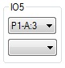 | Set the input for program 5 to P1-A:3 |
| 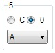 | Configure program 5 by setting its mode to A and its Clear/Correct switch to 0 |
| 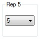 | Set the repeat program control for program 5 to 5 |
|
Next connect the A digit output port to D1-A |
Accumulator 2 is now configured for this step of our setup. When it receives a pulse on
P1-A:3 it will then send its contents out the A digit port, connected to D1-A, for the next
5 addition times. Now we need to configure accumulator 1 to receive this number 5 times.
|
Be sure that accumulator 1 is selected |
| Set the input for program 5 to P1-A:3 | |
| 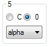 | Configure program 5 by setting its mode to alpha and its Clear/Correct switch to 0 |
| Set the repeat program control for program 5 to 5 |
This step is now done. Go ahead and run what we have so far.
|
Switch to the Init tab |
| Press the Clear button | |
|
Followed by the Go button |
|
Switch back to the Acc tab |
The accumulator display should now be showing 2403
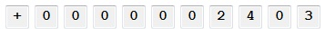
Now in order to demonstrate how to do subtraction we will now subtract the contents of
accumulator 1 from accumulator 15. I will explain later why we are using accumulator 15
for this step. Accumulator 15, like all accumulators, will contain zero after reset,
therefore in this step we will be subracting 2403 from zero to produce a negative number.
|
Be sure that the Acc tab is selected |
|
Be sure that accumulator 1 is selected |
| 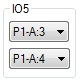 | First we need an output pulse to trigger this step. connect the output of program 5 to P1-A:4 |
| 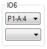 | We need to send the value from accumulator 1, so connect the input of program 6 to P1-A:4 |
 |
Configure program 6 to use mode S and set the Clear/Correct switch to 0 |
Like mode A that we used in the last step, mode S also causes an accumulator to send its
value. When mode S is used the value will be sent out the S digit port instead of the A
port. There is an important difference to these two ports. Port A always sends the exact
value stored in the accumulator. Port S on the other hand sends the compliment of the value
in the accumultor. so in our case, the accumulator holds +2403, when sending this value out
the S port it will actually be sent as -2403. This is how you perform subtraction on the
ENIAC.
| 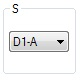 | Since we are sending out the S port, we must connect it to a digit tray. Connect it to D1-A |
Accumulator 1 is now all configured for this step. Now we need to configure accumulator 15
| 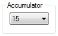 | Select accumulator 15 |
|
Turn On the power to this accumulator |
| 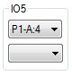 | Connect the input of program 5 to P1-A:4 |
| Configure program 5 by setting its mode switch to alpha and its Clear/Correct switch to 0 |
|
|
Since program 5 will be listening on the alpha channel, connect it to D1-A |
The configuration for this task is now complete. Lets run it and see what we have
|
Switch to the Init tab |
| Press the Clear button | |
|
Followed by the Go button |
|
Switch back to the Acc tab |
You should get this number below, probably not quite what you were expecting
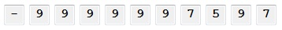
This is a good time to talk about how negative numbers are represented in ENIAC. ENIAC
shows negative numbers in 10s compliment. In order to convert the number to normal form
you must subtract each digit from 9 and then add a final 1. To show you how this is done
Lets take the number returned in the last step:
- 9 9 9 9 9 9 7 5 9 7
If you subtract each digit from 9 you get:
- 0 0 0 0 0 0 2 4 0 2
Then add 1:
- 0 0 0 0 0 0 2 4 0 3
If you have a number in normal form and need to convert it to 10s compliment for ENIAC, the
process is the same. Lets convert -10 to the form needed by ENIAC.
- 0 0 0 0 0 0 0 0 1 0
Subtract each digit from 9:
- 9 9 9 9 9 9 9 9 8 9
And add 1:
- 9 9 9 9 9 9 9 9 9 0
We now see that -10 is -9999999990 in 10s compliment.
ENIAC uses this 10s compliment for negative numbers everywhere, so you may as well get used
to looking at them.
We are almost done with what we set out to do. All we need to do now is punch out the results.
|
Be sure you are on the Acc tab |
| And accumulator 15 is selected | |
| 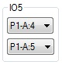 | We need one last program pulse. We will get it from the output of program 5. Set it to P1-A:5 |
This is all we need to do with the accumulators. Lets now connect the card punch.
 |
Start by selecting the Punch tab |
|
Turn the power On to the punch |
|
The program controls for the punch are actually located on the Initiating Unit, so select the Init tab |
| 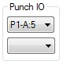 | Set the program input for the punch to P1-A:5 |
Ok, now run the setup. Rember, it is Init tab, Clear button, Go button.
|
Switch back to the Punch tab |
And lets take a look at our output:
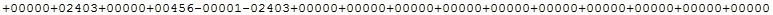
We need to do a little work on the output. The first thing to notice is that it printed 16
5 digit numbers. Remember that accumulators are 10 digits. The punch actually divides the
accumulators connected to it into two 5 digit numbers. So what is appearing is this:
+00000+02403 is coming from accumulator 1
+00000+00456 is coming from accumulator 2
These two numbers should look pretty familiar. The next two might be a little more confusing
-00001-02403 is coming from accumulator 15
First why we used accumulator 15 before. The punch is connected to the following accumulators
1, 2, 15, 16, 17, 18, 19, and 20. We need to make sure the values we want to punch are located
in these registers.
Now the interesting output from accumulator 15. Before I mentioned that all negative numbers
on ENIAC are represented in 10s compliment. When negative numbers appear on cards, wether they
are cards to be read or cards to be punched they are actually in normal form, not 10s compliment.
Now, the punch converted the value in accumulator as two separate 5 digit numbers. Accumulator 15
currently has - 9 9 9 9 9 9 7 5 9 7, which is taken as two numbers of - 9 9 9 9 9 and - 9 7 5 9 7.
We showed earlier the conversion of the -7597. Now use that discussion on the -99999 and you will
see that it converts to -00001.
The card that was punched is not what we wanted. We want 3 10-digit numbers. ENIAC gives us the
ability modify how the punch works. These modifications are made on the Print tab.
 |
Start by selecting the Print tab |
 |
Select Panel 1 |
This panel (Along with panel 3) consists of switches that allow you to associate print groups
together. Each print group that is connected will consist of just 1 sign and when negative is
converted as a group to normal form. We need to change the group connections for the accumulators
we are working with
 |
Accumulator 1 contains print groups 1 and 2, therefore we need to connect these two groups together by setting the 1-2 switch to C |
| 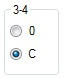 | Accumulator 2 contains print groups 3 and 4, therefore we need to connect these two groups together by setting the 3-4 switch to C |
| 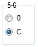 | Accumulator 15 contains print groups 5 and 6, therefore we need to connect these two groups together by setting the 5-6 switch to C |
All other switches on this panel and panel 3 need to be set at 0
Go ahead and run the setup and take a look at the output
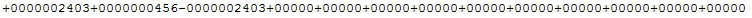
Now the three accumulators we are interested in all printed correctly as 10 digits. Also note
that the -1 is gone, once groups 5 and 6 were connected all 10 digits were taken into account
when the punch converted the number to normal form.
One last thing we will do, there are numbers being printed from the other accumulators that we
really do not need. Lets get rid of the extra numbers.
|
Start by selecting the Print tab |
 |
Select Panel 2 |
We want only groups 1 through 6 to be set to print, all other groups should be set to Off
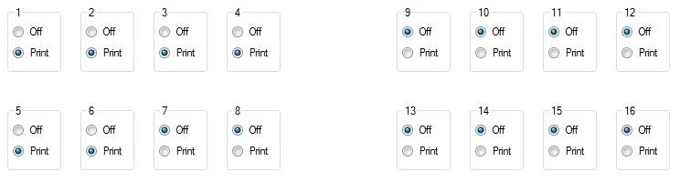
And now run the setup
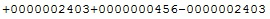
If you got this output, congratulaions, you have built your first ENIAC setup and had it run
correctly.
This was a long tutorial but you should have learned a lot from it! Good job!
Learned in this tutorial